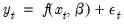
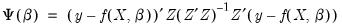
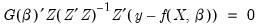
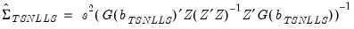
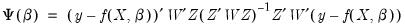
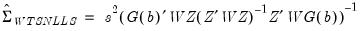
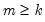
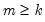

|
|
|






 is a
is a  -dimensional vector of parameters, and
-dimensional vector of parameters, and  contains both exogenous and endogenous variables. In matrix form, if we have  instruments
contains both exogenous and endogenous variables. In matrix form, if we have  instruments  , nonlinear two-stage least squares minimizes:
, nonlinear two-stage least squares minimizes: .
. is nonlinear, you may begin to think about using more than just the exogenous and predetermined variables as instruments. Various nonlinear functions of these variables, for example, cross-products and powers, may also be valid instruments. One should be aware, however, of the possible finite sample biases resulting from using too many instruments.
is nonlinear, you may begin to think about using more than just the exogenous and predetermined variables as instruments. Various nonlinear functions of these variables, for example, cross-products and powers, may also be valid instruments. One should be aware, however, of the possible finite sample biases resulting from using too many instruments.